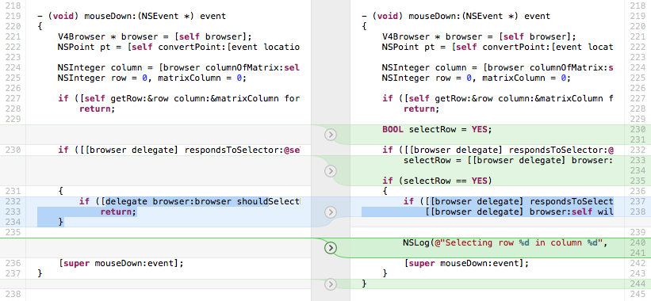
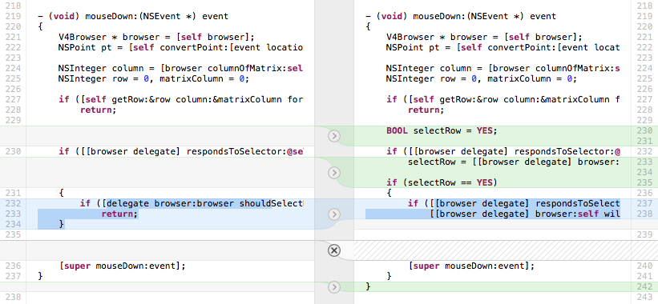
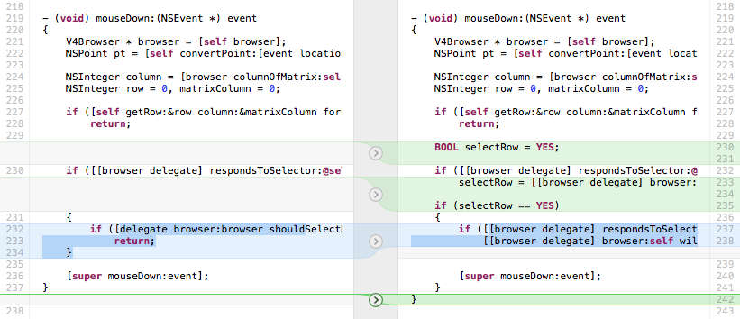

-
Uncheck Compare > Show Differences in Whitespace (key equivalent ⌘').
or
-
Click the whitespace button
 at the bottom of the compare view.
at the bottom of the compare view.
When reviewing changes, either before committing changes or as part of a code-review process with other team members, you may decide not to keep individual changes.
Examples of such changes include:
console.log() or Cocoa’s NSLog().Cornerstone not only enables you to compare text files side-by-side, but it also provides you with tools to reject individual changes within those files.
You can only edit changes made to your working files. It is not possible to edit differences when comparing non-WORKING revisions.
To open a file for editing:
Select the modified file you want to edit in the working copy file browser.
Press the Compare With BASE button in the view’s toolbar to display the compare view (key equivalent ⌘⏎).
In the following example, the mouseDown: method has been changed to add support for a new delegate method. The developer would like to remove the call to NSLog() on line 240 before committing the changes to the repository.
By default, the compare view compares differences in whitespace. This is great for visually grouping related lines but can reduce the granularity for editing.
If whitespace comparison is disabled then lines 240-241 are shown as a single change:

To disable whitespace comparison:
Uncheck Compare > Show Differences in Whitespace (key equivalent ⌘').
or
Click the whitespace button at the bottom of the compare view.
To reject a change:
Navigate to the change that should be rejected by using the the Previous Difference (⌘↑) and Next Difference (⌘↓) functions in the Compare menu.
Select Revert to Original Text from the Compare menu (key equivalent ⌘⇧⌫)
or
click the change’s arrow button .
The text is copied from left to right. Deleted edits are shown using a hatched fill .

To undo an edit and revert to the original text:
Select Restore Modified Text from the Compare menu (key equivalent ⌘⇧⌫)
or
click the change’s undo button  .
.
or
Select Undo from the Edit menu (key equivalent ⌘Z).
To save edits to the file:
Select Save from the File menu (key equivalent ⌘S).
The changes are saved to the file and the comparison is updated to reflect the file’s contents:

To revert to the file’s original state:
Select Revert to Saved from the File menu.
or
Exit the compare view by clicking the Files button in the navigation bar. You will be prompted to confirm that edits should be discarded.